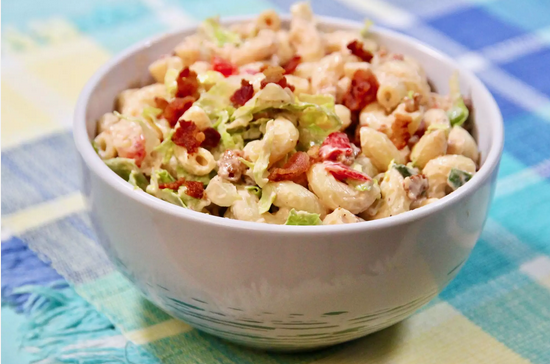

BLT Pasta Salad with Mayo

An imitation of the real deal
You need the following ingredients
- 1 (7 ounce) package elbow macaroni
- 1 pound bacon, diced
- 2 tablespoons lemon juice
- 1 large avocado, diced
- 1/2 cup mayonnaise
- 1/2 cup creamy salad dressing
- 1/3 cup tomato-based chile sauce
- 1/4 cup lemon juice
- 2 teaspoons chicken bouillon granules
- 2 teaspoons white sugar
- 1 large tomato - cored, seeded, and diced
- 1/2 cup sliced green onion tops
- 6 cups shredded lettuce
Directions
- Bring a large pot of lightly salted water to a boil. Cook elbow macaroni in the boiling water, stirring occasionally, until tender yet firm to the bite, about 8 minutes. Drain and rinse with cold water. Set aside.
- Fry bacon in a large skillet over medium heat until browned and crisp, about 7 minutes. Remove with a slotted spoon and drain on paper towels. Refrigerate when cool.
- Sprinkle 2 tablespoons lemon juice over the diced avocado.
- Combine mayonnaise, creamy dressing, chile sauce, 1/4 cup lemon juice, chicken bouillon, and sugar. Stir in the cooked macaroni, avocado, tomato, and green onions. Cover tightly and refrigerate until well chilled, at least 6 hours. Mix in lettuce and the reserved bacon just before serving.